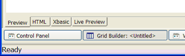
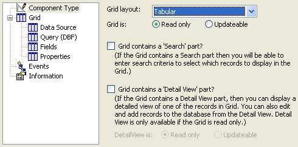
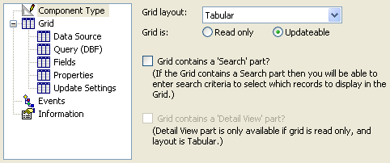
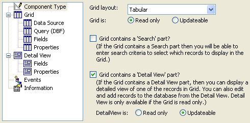

Creating a Grid Component
Selecting the Grid Component Type
To create a grid component.
Click Web Projects to start the Web Projects Control Panel.
Click
 New on the toolbar.
New on the toolbar.Select Web Component and click Next >.
Select Grid and click OK.
The Grid Builder is a genie that creates a grid component. The Grid Builder has 4 tabs visible at the bottom of the screen. Each tab has a window at the bottom of the dialog.
Preview - shows the component as it will appear in the browser.
HTML - shows the HTML being generated in the background.
Xbasic - shows the Xbasic code being generated in the background.
Live Preview - shows the component running in a temporary page.

Select Component Type.
Select the style of component from the Grid Layout list. The options are:
"Tabular" - a multi-record view similar to a browse, view, or spreadsheet
"Columnar" - a single-record view that places the field labels to the left of the fields. You can modify the columnar style to display multiple records.
"Stacked Columnar" - a single-record view that places the field labels above the fields. You can modify the stacked columnar style to show multiple records. Picture
{kind=link}

Specify whether the grid is Read only or Updateable.
If the grid is read only, the fields will appear as text labels. Field widths will be set by the widest field in any column. Depending on the selection of records, the overall grid width will also vary.
If the grid is read only, the Detail View check box option will be enabled.
If the grid is updateable, the Grid > Update Settings page will be available.
Specify whether the grid will have a Search part. The search part is a customizable search form that allows you to find records in the underlying table(s).

If you selected "Tabular" in step 6 and "Read only" in step 7:
You may check Grid contains a 'Detail View' part. The Detail View part is a customizable search form that allows you to insert, edit, and delete records in the underlying table(s).
If you have a detail view, and you want to use it to add or edit records, select Updateable.

See Next
Supported By
Alpha Five Version 6 and Above
Limitations
Web publishing applications only.